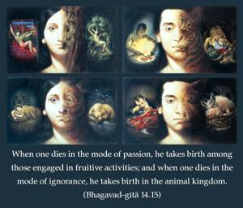
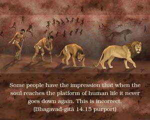

When one dies in the mode of passion, he takes birth among those engaged in fruitive activities; and when one dies in the mode of ignorance, he takes birth in the animal kingdom.


Some people have the impression that when the soul reaches the platform of human life it never goes down again. This is incorrect. According to this verse, if one develops the mode of ignorance, after his death he is degraded to an animal form of life. From there one has to again elevate himself, by an evolutionary process, to come again to the human form of life. Therefore, those who are actually serious about human life should take to the mode of goodness and in good association transcend the modes and become situated in Kṛṣṇa consciousness. This is the aim of human life. Otherwise, there is no guarantee that the human being will again attain to the human status.